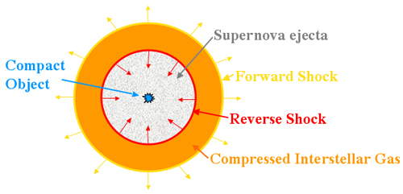

A supernova remnant (SNR) is a diffuse, expanding nebula that results from a supernova explosion. They are categorised into three main types based on their appearance, with the differences arising due to variations in initial progenitor and explosion conditions, density variations in the interstellar medium (ISM) and Rayleigh-Taylor instabilities.
The SNR consists of material ejected in the supernova explosion itself, as well as other interstellar material that has been swept up by the passage of the shock wave from the exploded star. Although not necessarily visible at optical wavelengths, SNRs tend to be powerful X-ray and radio emitters due to interactions with the surrounding ISM. They typically last several hundred thousand years before dispersing into the ISM, during which time they evolve through 3 main stages:
Free Expansion
When the supernova first explodes, a shock wave is sent out through the star. Once it has passed through the stellar material, it continues to expand into the surrounding ISM creating a shock wave in the interstellar gas in the forward direction, and also a shock in the reverse direction, back into the supernova ejecta. This shocked material is heated to millions of degrees Kelvin resulting in the emission of thermal X-rays.

The shock wave also accelerates the ISM into an expanding shell which outputs copious amounts of synchrotron radiation due to the acceleration of electrons in the presence of a magnetic field. This expanding shell surrounds an area of relatively low density, into which the supernova ejecta expands freely, typically with velocities of around 10,000 km/s. This free expansion phase lasts for around 100 – 200 years until the mass of the material swept up by the shock wave exceeds the mass of the ejected material.
Adiabatic (Sedov-Taylor) Phase
As the mass of the ISM swept up by the shock wave increases, it eventually reaches densities which start to impede the free expansion. Rayleigh-Taylor instabilities arise once the mass of the swept up ISM approaches that of the ejected material. These instabilities mix the shocked ISM with the supernova ejecta and enhance the magnetic field inside the SNR shell. This phase lasts between 10,000 and 20,000 years.
Radiative Phase
The shock wave continues to cool, and once temperatures drop below about 20,000 Kelvin, electrons start recombining to form heavier elements. This recombination process radiates energy much more efficiently than the thermal X-rays and synchrotron emission produced thus far, further cooling the shock wave which ultimately disperses into the surrounding ISM.
Supernova remnants play a vital role in the evolution of galaxies. Apart from their role of dispersing the heavy elements made in the supernova explosion into the ISM, they provide much of the energy that heats up the ISM and are believed to be responsible for the acceleration of galactic cosmic rays.